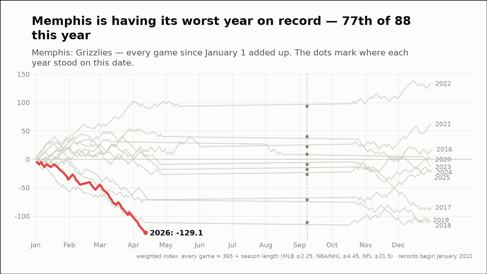
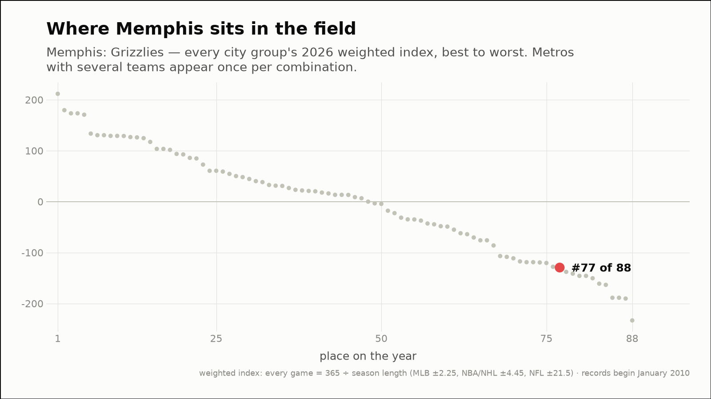
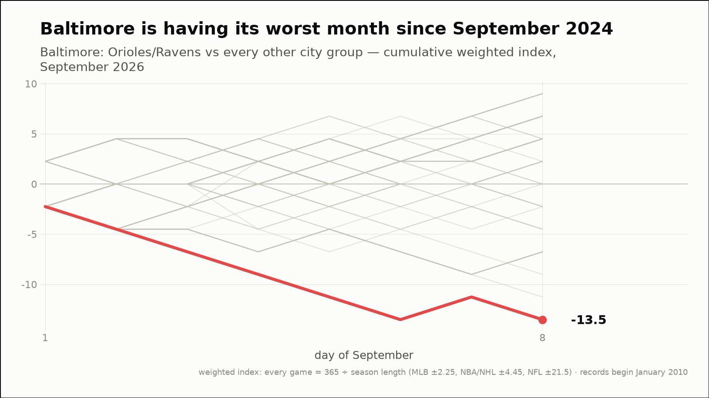
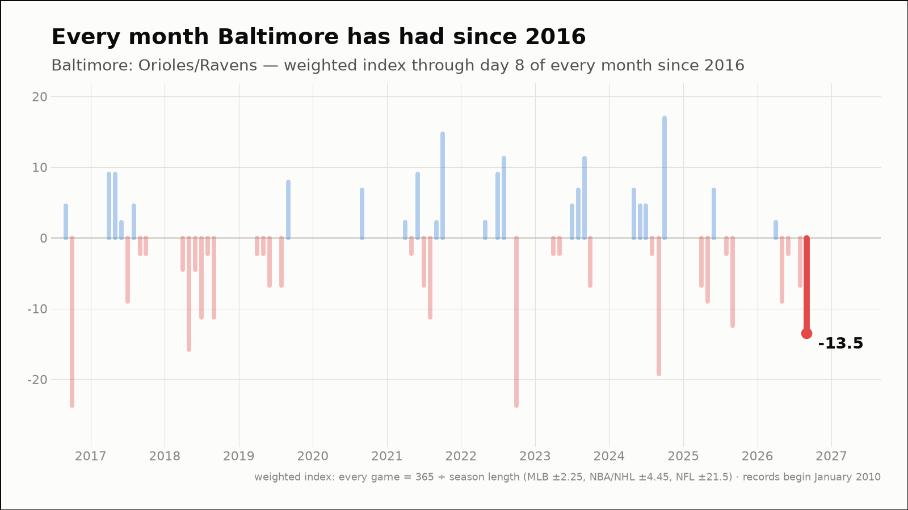
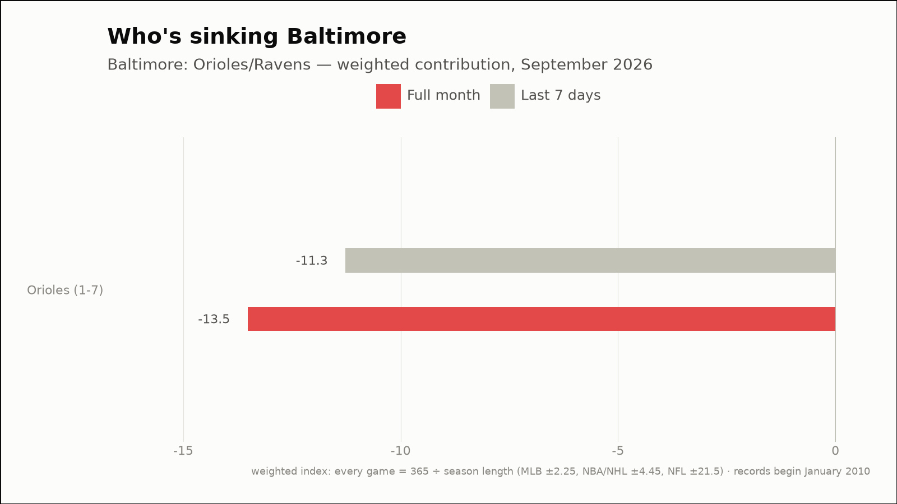
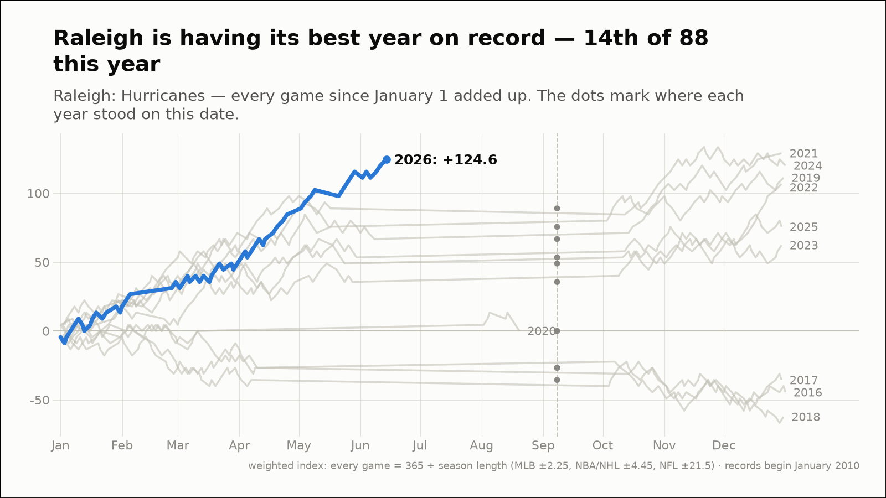
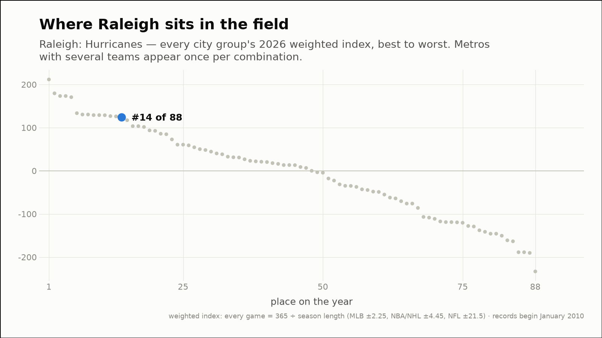

Out of the norm — three fandoms off their own script
The weekly hunt across all 88 city groups, through September 8, 2026
Memphis is having its worst year on record — 77th of 88 this year
Memphis: Grizzlies
- 2026 so far (through September 8)
- 10-39, -129.1 weighted — 1st-worst of the 11 years on record, at the same point
- Against the field
- 77th of 88 city groups on the year (13th percentile)


Baltimore is having its worst month since September 2024
Baltimore: Orioles/Ravens
- This month (through September 8)
- 1-7, -13.5 weighted — 5th-worst of 62 months on record (7th percentile)
- vs past Septembers
- 2nd-worst September of the 11 on record
- Last 7 days
- 1-6, -11.3 weighted
- Driving it this week
- Orioles (1-6, -11.3)



Raleigh is having its best year on record — 14th of 88 this year
Raleigh: Hurricanes
- 2026 so far (through September 8)
- 45-17, +124.6 weighted — 1st-best of the 11 years on record, at the same point
- Against the field
- 14th of 88 city groups on the year (85th percentile)

